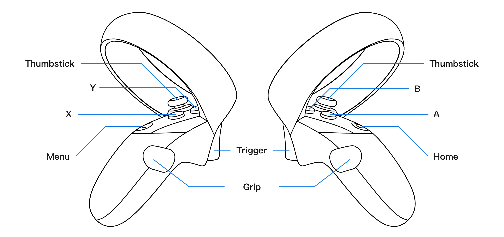

手柄
YVRInput 和 YVRControllerRig 是获取手柄数据的两个入口。YVRInput 实现了所有与手柄输入状态相关的功能，而 YVRControllerRig 则封装了所有与手柄刚性相关的操作和信息。
了解更多信息，请参考 YVRInput 和 YVRControllerRig。
YVR 触摸追踪
YVRControllerRig 通过 GetPosition 和 GetRotation 提供触摸位置和方向数据。其他数据，如速度、角速度、加速度和角加速度也可以从 YVRControllerRig 获得。
YVRInput 用途
YVRInput 的主要用途是通过 Get()、GetDown() 和 GetUp() 访问手柄输入状态。并且设置手柄的振幅和时长。
Get()：查询一个控制器的当前状态。GetDown()：查询该帧中是否有按钮（触摸）被按下。GetUp()：查询这一帧是否有按钮（触摸）被释放。SetControllerVibration()：设置手柄振幅与时长。
控制输入枚举
对于 Get()、GetDown() 和 GetUp() 函数，有多种变化以提供对不同控件集的不同访问。这些控制集被分为两类：Virtual Mapping 和 Raw Mapping，并都是通过枚举暴露的。在 Virtual Mapping 中定义的枚举类别如下：
VirtualButton：YVR Touches 上的传统按钮。VirtualTouch：YVR Touches 上的电容感应控制面。VirtualAxis1D：报告float状态的一维控件。VirtualAxis2D：报告Vector2状态的二维控件。
Raw Mapping 类别中定义的枚举与 Virtual Mapping 中的枚举高度相关，如下所示：
RawButtonRawTouchVirtualAxis1DVirtualAxis2D
Raw Mapping 和 Virtual Mapping 之间的转换，请参考以下部分。
Touch Input Mapping
